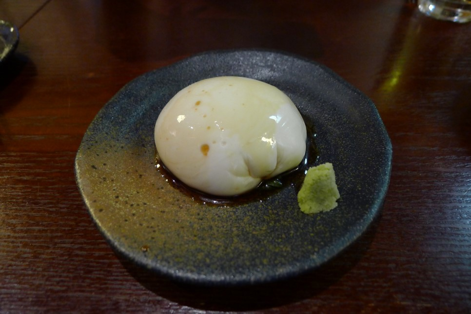
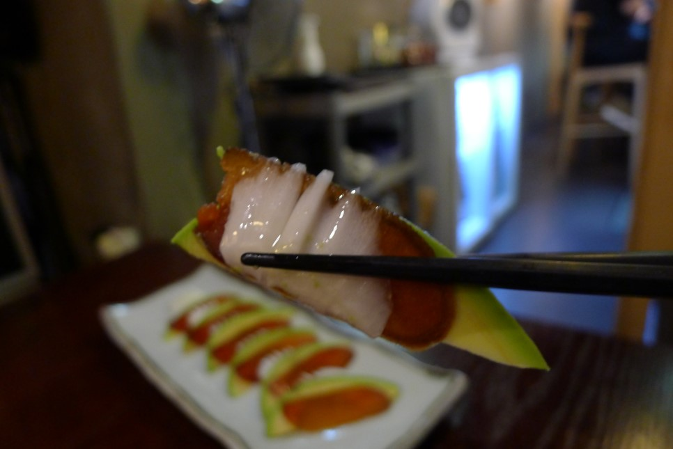

Restaurants in Seoul
1. 文ノ字 [분노지]

KIRIN ICHIBAN Draft beer [기린 이치방 생맥주]
Mochi ri tofu [모찌리도후]

Karasumi(salted roe) & avocado & rapa cabbage [어란, 아보카도, 배추]

- 월요일 저녁인데도 사람들로 꽉찬 분노지. 아는 분 소개로 처음 갔다가 너무 맘에 들어 자주 가게됐는데, 알고보니 문사장님과 친분있는 사람이 주변에 꽤 있더라. [세상 참 좁다] 그래서 그런지 더 편안하고 집 같은 단골집. 어란을 들여왔다는 얘기를 듣고 후다닥 시식하러 갔다가 아직 주문 안된다는 말에 실망할뻔 했는데, 사장님이 특별히 첫 개시 해주셔서 맛본 어란, 항상 느끼는거지만 사장님은 특이한 조합으로 음식의 밸런스를 참 잘 뽑아내시는 것 같다. 쫀쫀하고 짭짤한 어란과 녹진하고 부드럽고 고소한 아보카도에 아삭하고 달짝지근한 배추 조합이 너무 훌륭하다. 분노지를 너무 애정하는 이유들 중 하나는, 문사장님 혼자서 키친을 맡고 계시다는거. 그래서 항상 음식의 퀄리티가 동일하다. 이렇게 장사가 잘되면 확장할 법도 한데, 그러면 혼자서 주문을 다 커버할 수가 없어서 이게 딱 좋다고 하신다. 절대 키친은 나눠주지 않으실거라는 얘기. 앞으로도 계속 이 마음 그대로 가져가 주실거라 믿는다.